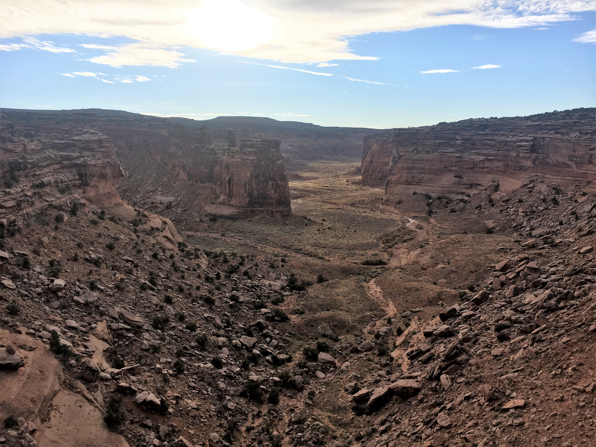
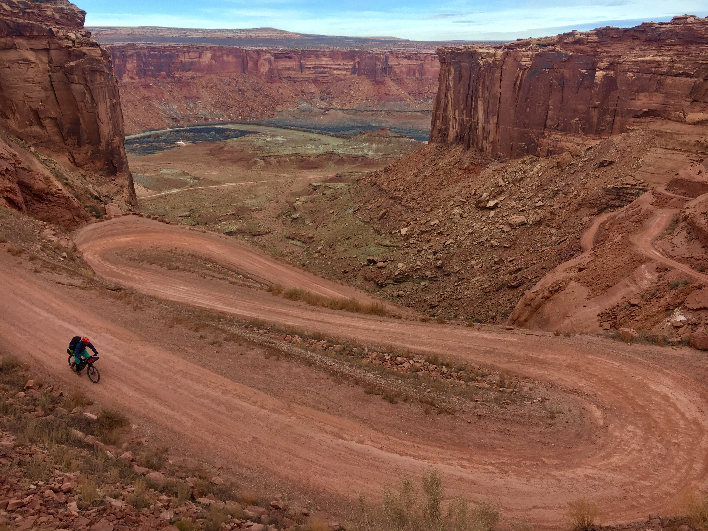
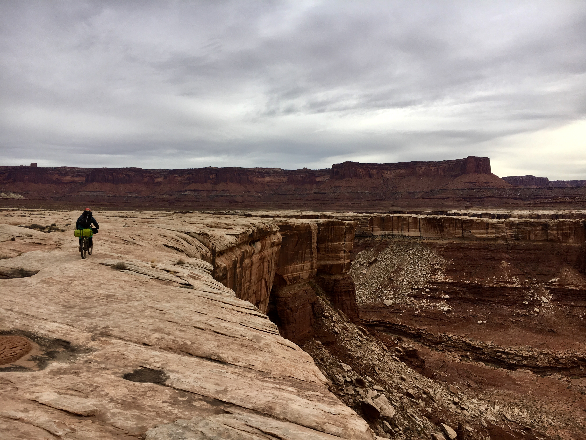
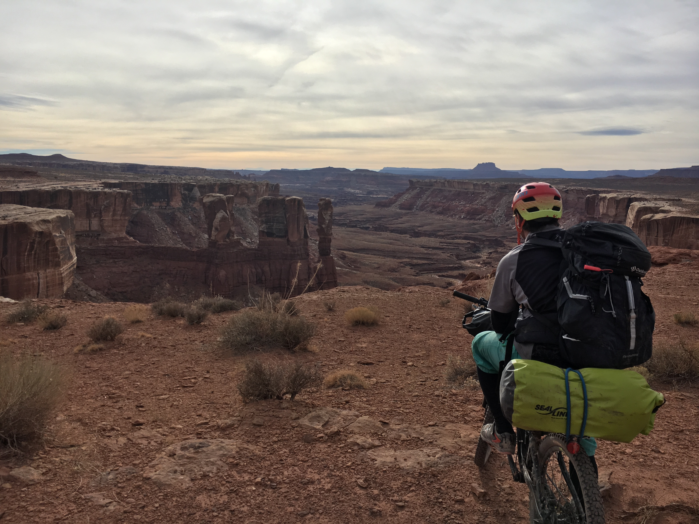
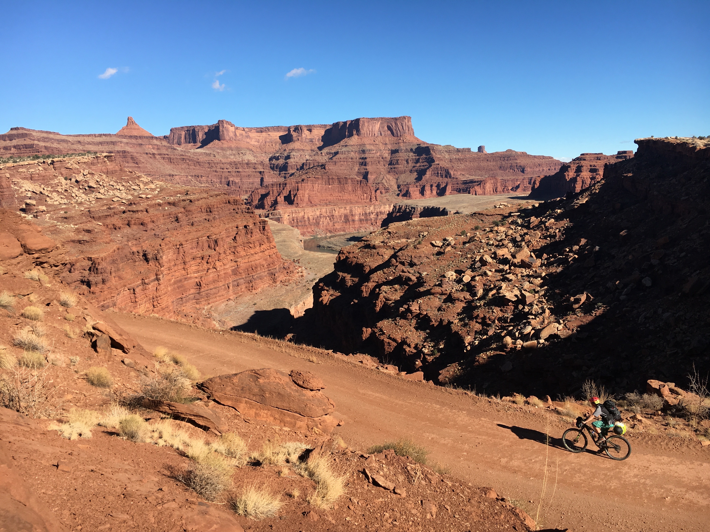
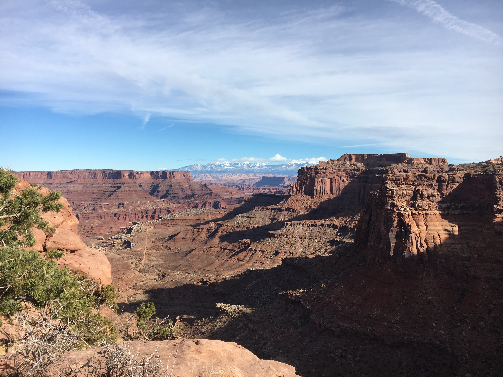

Planning this trip was almost as fun as the trip itself. I started by downloading
the GPS data for a bikepacking trip on the popular White Rim Road inside of Canyonlands
National Park. I was then able to import it into an application called GaiaGPS® which
allowed me to add onto the route. I chose to extend the route northwards to the area known
as Barletts Wash and then completed the loop, which added a total of 40+ miles onto the
orginal White Rim Road.
Packing for the trip was not as hard as I originally thought it would. Even though it was
cold, sub 40 degrees, the majority of the time I packed what I normally would bring on fall
camping trips. The food we packed was mostly just the freeze dried backpacking meals, but
the big ticket item we brought was a jar of Nutella which packs a big punch in the calorie
department and is extremely delicious.
Another aspect of this trip was to plan on where we would be able to resupply with water and food.
Reading some resources online we chose to drop water, beer, and food at the Gooseberry Trail's junction with the White
Rim. The next water drop we chose was the Schafer Trail Viewpoint since it was most likely close to our
last night's campsite. Other than these water drops we would use the Green River as a water source, and a t-shirt
as well as my water filter to purify the river water.

The morning of the first day we had to spot all of the water and supplies along our route. It didnt take
long to stash the supplies we would need for the rest of the trip, and we were at the trailhead ready to
start our journey around 11:00am.
After fine-tuning our bikes and getting rid of extraneous gear we set off from Bartlett's Wash with the goal
of making it to the Green River. The first couple miles consisted of two-track and bottomless sand, which did
not allow us to make very good time. However, after we reached Dalton Wells Road we were able to make up for the lost time
and find the top of Hell-Roaring Canyon. The original route had us dropping down into Hell-Roaring and then
taking it all the way to the Green River. However, after multiple hours of scouting the edge of the canyon it
seemed impossible to descend unless we had the equipment to rappel. With our orignial route not possible we
decided to pitch camp and then ride out to the beginning of the White Rim Road via Dalton Wells.

The second day started frigidly and it took us a while to thaw our water out enough to brew some coffee and make
some oatmeal. Once we got started though we were able to make very quick time getting to the entrance road to the White
Rim. Once on the entrance road it was around an 8 mile coast downhill to the Green River. We were finally surrounded by canyon country
and could not keep the smiles off our faces even though our feet were frozen due to wind and cold temperatures.

After reaching the Green River we had a non-eventful but extremely beautiful couple miles till the campsite we had chosen to stay
at. We reached the campsite with time to spare, which was a good thing cause we did not have enough water to make our dehydrated
meals. As soon as we could we proceeded to walk to the river to filter water for dinner and the next day. Even though the water was
extremely cloudy, we were able to get rid of a lot of particulates with just a tshirt and then used my microfilter to completely clean
it. Watching the canyon walls turn orange to red to pink while eating our dinner was an experience that I will never forget and it was
enough to lull us into an early and deep sleep.
The third day brought much warmer temperatures and we were able to start much earlier since we did not have to thaw our water out.
Once up, we had the first of many small passes that we would encounter for the day, while they were small in elevation
they did pack a punch since we were carrying a lot of weight on our bikes. After a couple miles we met the first person during the trip, which
happened to be a very nice park ranger who gave us some information about the rest of our route. The remaining part of this day was a long and
beautiful ride that had us riding close to 1000ft drop offs and peering down into the maze of canyons below.

After a long day with a little under 40 miles of riding we rolled into our campsite and set up our camp. After we found our water drop from a
couple days prior and had one of the more amazing beers of my life while enjoying the sunset over the Maze District and the La Sal Mountain Range.
This was the day that everything clicked in our trip, nothing went horribly wrong, we were able to rack up the miles while still enjoying the
scenery, and to top it off were able to enjoy a beautiful IPA at the end of the day.

Crawling out of bed on day four we were greeted with fatigue and lots of sore muscles. This was going to be another big push of a day, we were
scheduled to ride out of the National Park and camp somewhere close to the trailhead where we started. It was relatively flat for the majority of the morning,
and we were able to enjoy the scenery and make very good time. After 15 miles or so of riding we got to view our route out of Canyonlands, it consisted of around 15
switchbacks and climbed 1700 vertical feet. We took a long break at the base of the climb, ate a lot of snacks and dumped our remainging water to reduce weight on the
climb. After our well deserved break we proceeded to take it slow and steady all the way to the top, where we stashed another couple gallons of water as well as some
nice cold beers. Sitting on the rim of Canyonlands drinking our last of the stashed beer of the trip we reflected on the past couple days and that while being
technically easy biking it was very fun riding for the majority of the route.


The final day dawned beautiful, we ate the last of our food and started off on some of the best riding all trip. Since we had all day and only around
15 miles to go we decided to ride some singletrack called the Chalom Trail. Riding singletrack after 4 days of riding dirt roads was an awesome end to our trip. The dirt was
nice and tacky and the wind was crisp and cool as we twisted and turned our way down the new trail. We rode the trail for around six miles until we were able to link back
up with Dalton Wells road. The remainder of the riding was uneventful and we soon found ourselves back at the cars around lunchtime.
The actual riding on this trip was not the most exhilarating, however the scenery could not be beat. There is a very big draw to being out in the wilderness, completely reliant
on yourself, there leaves little room for error but lots of time to think and reflect on how your life is going. While we were not able to piece together the original plan, we
both decided that we would highly suggest this new route to anyone who wants to get an introductory experience into bikepacking. After a couple beers at the trailhead we split ways knowing
that we would be back in the saddle again sometime during the upcoming summer, hopefully to try a longer and more exhilarating experience.
